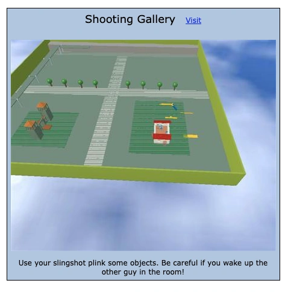
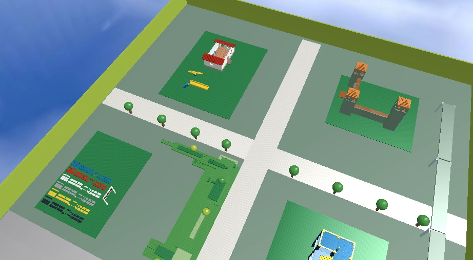
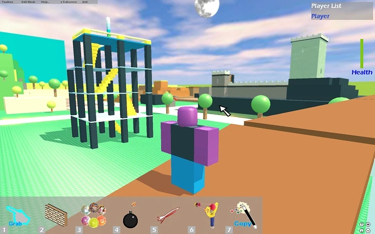
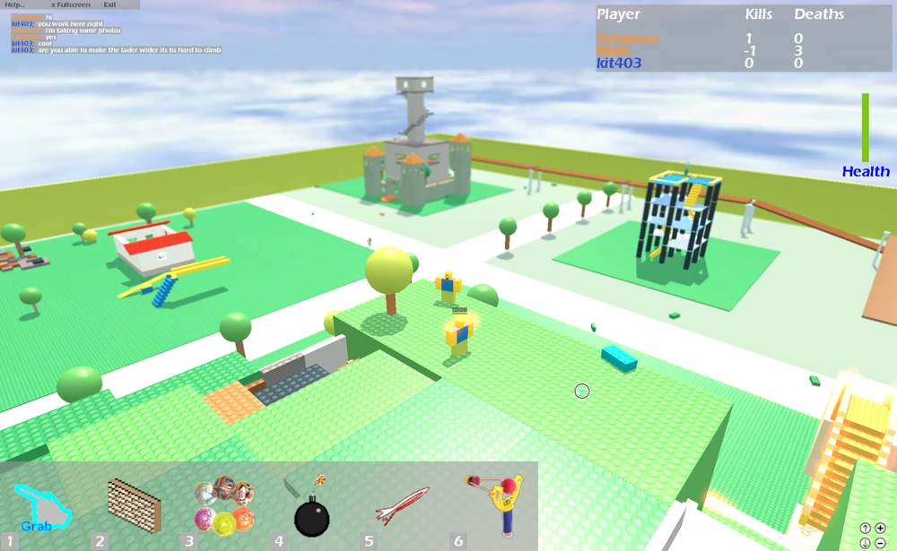

Crossroads
CREATED: 2006.
CREATOR: Shedletsky
PERMISSION: COPYLOCKED
STATUS: PLAYABLE - PUBLIC
GAMEMODE: infinite-Free For All.
TRIVIA
"Battle your way through the secret hideout, storm the castle, invade the underground ruins, and capture the lookout tower. But be wary: there's always a showdown at The Crossroads. "
- Crossroads old game description.
DESCRIPTION
Crossroads is one of the first games on ROBLOX, also the first Brickbattle game ever made. Crossroads was created by Telamon, and is a symbol of the early days of ROBLOX.
HISTORY
Months before ROBLOX's official release, the game when trought a lot of testing, the principal goal was testing the multyplayer hosting, due to this, Crossroads was born along with more games that got released after it, Crossroads went trought different versions and updates. many of its early versions has been documented.
CROSSROADS BETA
Crossroads haves different betas, its first iteration takes place in May 2006, before Crossroads was called "Crossroads", it was named as "Shooting Gallery", this version only had a few buildings, and was almost empty.
Shooting Gallery, May 2006

This version of crossroads only had a few trees, a castle (later used on roblox HQ),
a house (later the medical station at roblox HQ), and a green bridge that later would work as
the blacrock's castle brown bridge. During that time, the game was just a showcase map,
but turned into a fighting game when Shedletsky started to work at ROBLOX.
By Shedletsky's words, when he joined ROBLOX, Eric and David(Builderman) were struggling with
creating Crossroads, so he helped and did significant advancement to the game, the first update
of Crossroads got released on late June 2006. The game's toolset consisted of rocket launcher,
slingshot, and the move tool, later the trowel was added to the game. This first update added the
Free bricks area (later used in Happy Home In Robloxia), a new wing for the castle, and a tower.
first Crossroads update
In August 2006, the free bricks area got replaced with Thieves' Den, behind it 2 cyan walls were placed, and the medical station got replaced with the lost temple, during a timespawn, a watch tower was added to the castle, then the castle got replaced with the Blackrock's castle we have nowadays, with the exception that there was bigger watch tower instead of the black mountain from the final version. with this update, the weapons got a recode, plus the addition of the Superball and Timebomb
Shedletsky in Crossroads, Late August 2006, the 2 cyan walls and the watch tower in the blackrock's castle are visible.
A picture from Crossroads on August 2006, an user asks Telamon(Shedletsky) to fix the ladders

At the beggining of September, Crossroads started to look more like the map we know today,
blackrock got its watch tower removed and received a high mountain instead, and the Lost Temple
got the spinning red bar, and the Team Beacons where added, at March 2007, the game got revamped
entirely, the cyan walls got removed, the trampoline was added and the skybox was changed, plus a
day-night cycle, billboards where placed, and the hopperbins got replaced by working tools. The
Sword and paintball gun got added in May 2007.
Crossroads is well-known among the veteran side of the community, as it was where all the Brickbattlers
would practice during Roblox's early era. Crossroads was often highly populated, with every group or
Brickbattle clan gathering there to practice or spread their influence. However, by 2014, Crossroads
began to suffer from a lack of players, with servers now hosting only 0–10 players at a time.
On September 17, 2017, the game was taken down due to concerns regarding FilteringEnabled but was shortly
republished with dynamic lighting, aftereffects, and filtering enabled. On August 7, 2017, T.O.B published
a remake of Crossroads, featuring the same map but with different tools and new techniques. This iteration
has become more popular, often attracting up to 15 players daily, while the original game now averages
only 5 players per day.
GALLERY